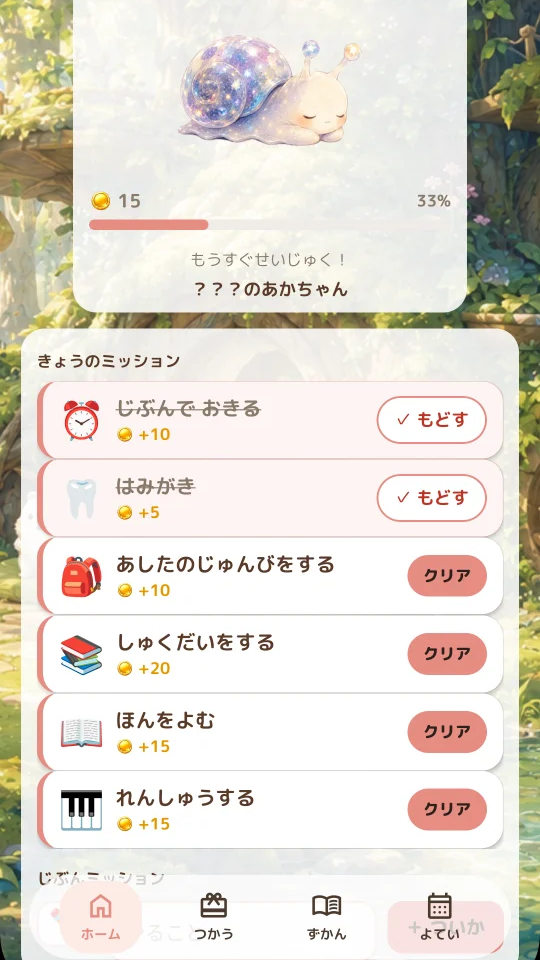

習い事の練習に
レッスンで教わったことを、家で試すミッションに。
- 曲の苦手な2小節を練習する
- 振り付けをひとつ確認する

TaskEgg / Ideas & Tips
やることを確かめて、取り組んだら記録する。誰かに言われてからではなく、自分から取り組めるようになることを目指します。家のことも、習い事の練習も、自分に合う進め方で。
Check what needs doing, then record it when done. TaskEgg aims to help you take the initiative with everyday tasks and practice, in a way that works for you.

Getting Started
Mission Ideas
レッスンで教わったことを、家で試すミッションに。
子どもと相談して、取り組む内容やタイミングを決めてみましょう。
家事や学びも、始めやすい量から。
外出前や寝る前のチェックにも。
戸締まりは実際に鍵を確かめてから記録してください。アプリが鍵の状態を確認するものではありません。
Turn something from a lesson into a small mission to try at home.
Talk with your child about what to do and when to do it.
Start housework or learning with a manageable amount.
Use missions as a checklist before going out or going to bed.
Always check locks in person before recording completion. TaskEgg does not detect whether a door or window is locked.
Rewards & Coins
「ごほうび管理」で内容と必要なコイン数を設定できます。子どもと使うときは一緒に相談し、大人は自分の楽しみに合わせて。
例えば、1回2コインのミッションなら、10コインのごほうびは5回分。無理なく届く設定から試してみましょう。
設定の「コイン機能」をオフにすると、コインの付与が止まり、「ためる」「つかう」タブが非表示になります。これまでのコインや設定は残ります。
まずは、できたことの記録やキャラクターとの出会いを楽しむ使い方でも大丈夫です。
ごほうびは高価なものでなくて大丈夫。食事や休息など、日々必要なものは交換の条件にせず、無理なく続けられる楽しみを選びましょう。
In “Rewards,” you can set each reward and how many coins it costs. Discuss rewards together when using TaskEgg with a child, or choose something you look forward to for yourself.
For example, if a mission earns 2 coins, completing it five times earns enough for a 10-coin reward. Start with an amount that feels achievable.
Turn off “Coin feature” in settings to stop awarding coins and hide the “Save” and “Shop” tabs. Existing coins and settings are kept.
You can simply enjoy recording what you have done and meeting characters.
Rewards do not need to be expensive. Keep everyday necessities such as meals and rest separate from rewards, and choose enjoyable activities you can comfortably offer.
Goal Ideas
「読書を習慣にしたい」なら、
まずは「本を2ページ読む」から。
目標は、今日できる行動に分けてみましょう。難しい日が続いたら、量や時間を見直しても大丈夫。「自分で始められた」ことも、一歩です。
Want to make reading a habit? Start with “Read two pages.”
Break your goal into actions you can take today. If it keeps feeling difficult, adjust the amount or timing. Starting on your own is progress too.